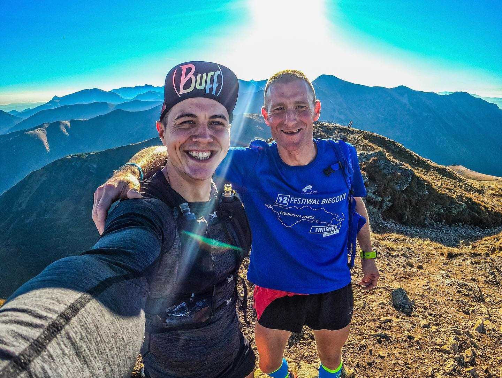
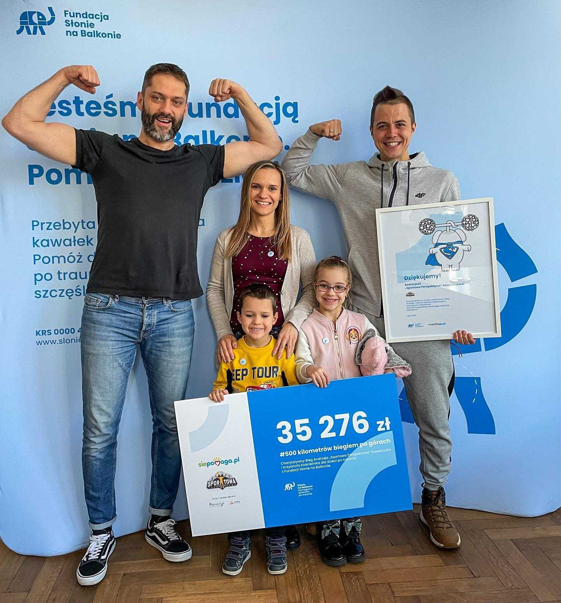
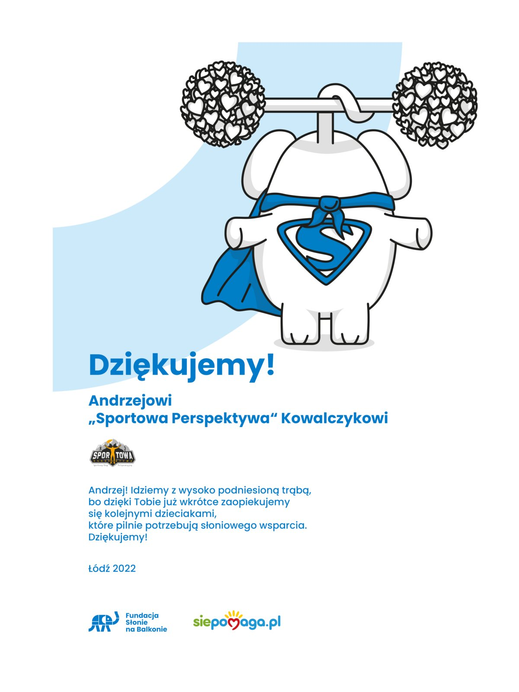
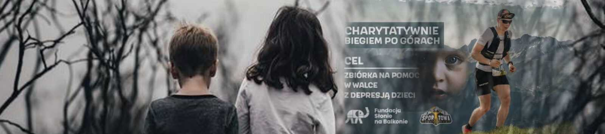
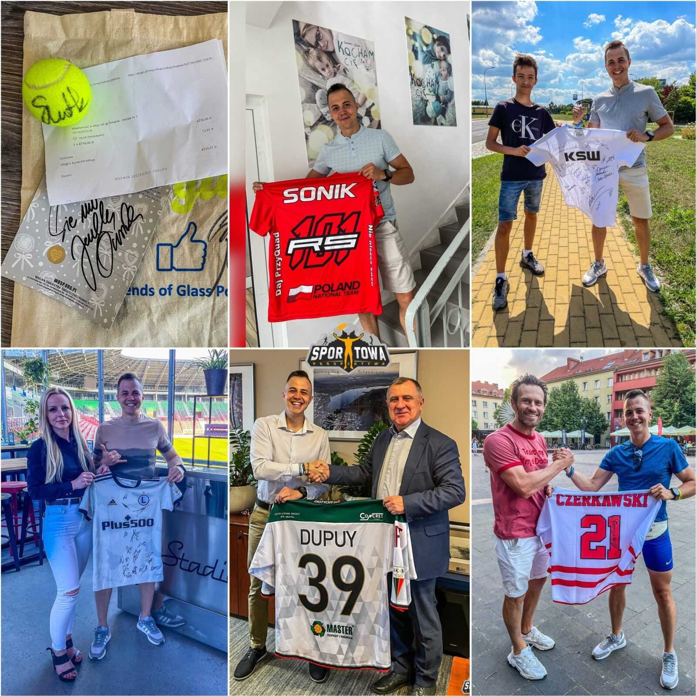
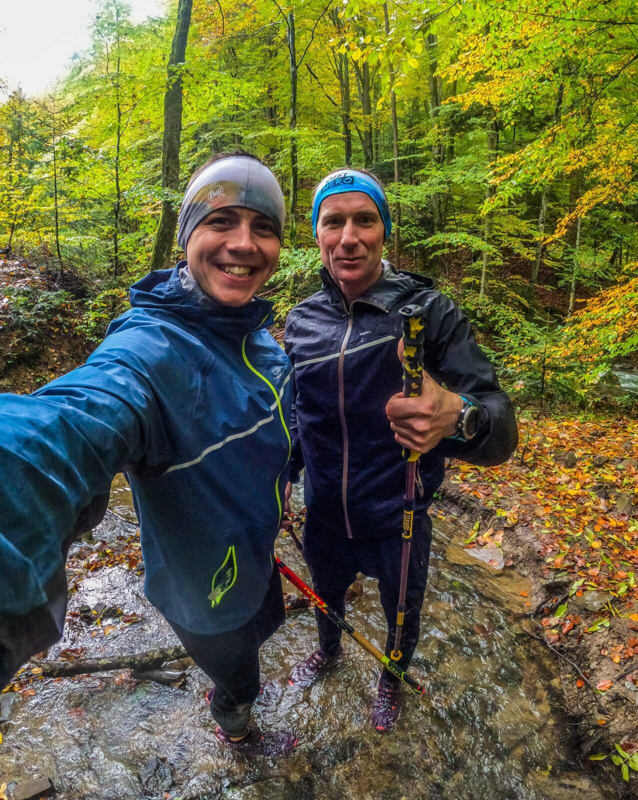
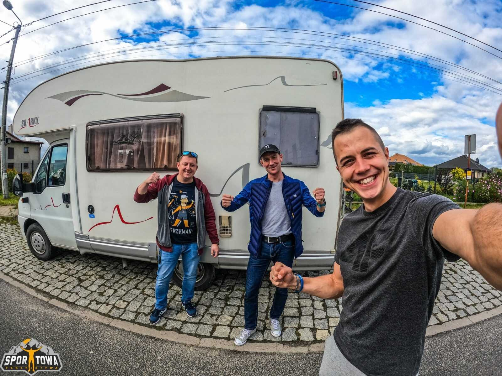

Blog
Z trasy.
Blog to dobra przestrzeń, by opisać i na dłużej zatrzymać najważniejsze chwile.
12–13 października 2024
The Loop. Wielka Pętla Beskidzka.
O tym, jak przebiegłem 235 km po górach w niecałe 43 godziny.
12 październik godzina 3:00, dzwoni budzik. W tym momencie wszystko się zaczyna. Za 2h mam wystartować w Bielsku-Białej na 235 km szlaku górskim. Przejście pętli z reguły zajmuje 8-10 dni. Moim celem jest zrobić to szybciej.
Rozdział IZ Bielska-Białej pod Babią Górę
Przed startem mój trener pisze mi wiadomość, że stać mnie na wynik 38 godzin. Jest to odrobinę bardziej optymistyczne założenie, ponieważ ja uznawałem, że wynik w okolicach 40 godzin będzie możliwy. Nie dyskutując jednak z nosem trenera, przygotowałem obszernego excel’a na poczet wyprawy, międzyczasy ustawiając wg intuicji trenera. Plik zawierał wszystko: międzyczasy w danym miejscu, co gdzie można zjeść, ile jest od ostatniego punktu, ile do następnego punktu, w jakich godzinach pracują sklepy, co zrobić na danym punkcie … czy nawet jaką pizzę w ofercie ma pizzeria, do której będę dzwonił.

Bielsko-Biała, godzina 5:04. Ruszam.
Tradycyjnie musiałem mieć poślizg mimo, że na miejsce dotarliśmy 40 minut przed czasem. Już przed startem pojawiły się pierwsze „problemy techniczne”. W momencie, w którym chciałem odpalić TRACKa/GPX na zegarku (czyli ślad na mapie, po którym będę się poruszał) – zegarek mielił, mielił, mielił … aż zdechł. Zresetował się. Zaczynało się dobrze. Gdyby sytuacja się nie poprawiła, musiałbym mocno improwizować z nawigacją na trasie, wręcz zaryzykuję stwierdzenie, że byłoby to niemożliwe zakładając tempo w jakim chce się przemieszczać. Mój błąd. Powinienem sprawdzić to w domu – ale nigdy wcześniej taka sytuacja nie miała miejsca. W ogóle Loop to dla mnie kopalnia nowych doświadczeń na przyszłość. Nie sposób przewidzieć pewnych sytuacji, dopóki się z nimi nie spotkasz.
O ile na MSB czy GSB zadanie jest proste – musisz poruszać się cały czas czerwonym szlakiem, a czasem i tak szlaki są kiepsko oznaczone – o tyle w przypadku takich wypraw jak The Loop, kolor szlaku co chwilę się zmienia i nie można polegać na pilnowaniu jednego kursu. Trzeba na bieżąco wiedzieć na jaki szlak odbić, a tego w trakcie biegu było przynajmniej kilkadziesiąt zmian szlaku. Na szczęście za drugim razem plik GPX się wczytał, a ja zegarka nie dotykałem już do końca biegu – żeby znów się nie zawiesił.
Zaraz po problemach z trackiem, w czwartej minucie biegu uświadomiłem sobie, że nie mam zawiązanych butów (ściągniętych linek w Salomonach) i nie włączyłem nadajnika GPS. Jeszcze przed wejściem w las zrobiłem postój i naprawiłem falstarty. Chwilę później dobiegam do progu lasu.
Początek jest mglisty. Widoczność na 2-3 metry, do tego światło czołówki oświetlające mgłę sprawia, że przed oczyma latają mi miliony małych kropeczek. Kto kiedykolwiek biegał we mgle z czołówką wie jakie to upierdliwe. Już przed Szyndzielnią miałem okazję kilka razy zboczyć ze szlaku. GPX na zegarku był niesamowicie niedokładny (jeszcze nie raz poruszę ten temat) i na rozejściach szlaków miałem wątpliwości, który wybrać a nie chciałem oddalać i przybliżać na zegarku trasy (żeby się nie zresetował), sprawdzając czy jak wybiorę dany wariant, to zaraz w razie złego wyboru – skrzyżuje się z powrotem z odpowiednim szlakiem. Jeżeli chodzi o zegarek. Tydzień przed The Loopem kupiłem Garmina Fenix 8. Teoretycznie miał być on lepszy od Fenix 7, którego miałem do tej pory – bateria miała wytrzymać pełną trasę Loopa bez ładowania (47h). W praktyce, wziąłem na taką trasę niesprawdzony sprzęt i faktycznie jak pierwszy raz się zresetował przy próbie wczytania sporego pliku GPX, to zawahałem się czy to był dobry moment na zakup. Zegarka też na trasie starałem się nie dotykać i w schroniskach nie wciskałem pauzy czy nie bawiłem się przybliżanie/oddalanie mapy na zegarku. Ostatecznie nie było z nim żadnego problemu aż do mety.
Przy schronisku na Szyndzielni zaliczyłem solidne kręcenie, na którym straciłem z 5 minut. Zegarek pokazuje „skręć w lewo” a gdy skręcam, nagle na wyświetlaczu zmienia się liczba z 218,8 km do mety, na 4,1 km do mety! Innymi słowy teoretycznie prowadzi mnie tak, jakbym zbiegał z powrotem do Bielska na Dębowiec – miejsce startu. To się wracam i idę pod Klimczok. Tam zegarek pokazuje mi, że znów 218,8 km meta, ale przecież z Klimczoka to ja mam zbiegać do mety, to nie mogę iść w jego kierunku?! Zanim odpaliłem mapy w telefonie by zobaczyć oznaczenie szlaku, trochę minęło. Początek biegu miałem więc słaby, zła passa przedstartowa się przeciągała.
Tutaj chciałbym zaznaczyć jedną rzecz. BRAK DOKŁADNEGO PRZEŚLEDZENIA TRASY TO JEDEN Z BŁĘDÓW, KTÓRE POPEŁNIŁEM. Z tym, że na każdym z biegów zbieramy doświadczenie i ten bieg był dla mnie ogromnym zbiorem doświadczeń. Nigdy wcześniej nie trafiłem na tak niedokładnego GPX, gdzie ślad nie pokrywał się często ze szlakiem, a cały Loop idzie szlakami. Do tej pory zawsze można było polegać tylko na tracku z zegarka albo na jednym kolorze szlaku. Wyciągam lekcję na przyszłość. Oczywiście byłem zabezpieczony w postaci map w telefonie, ale ich używanie podczas biegu gdy lecisz na rekord, jest mało praktyczne.
Po 90 min mam za sobą pierwszy leśny odcinek – docieram do Bystrej. Mogę wyłączyć czołówkę, bo robi się jasno. Tutaj można powiedzieć zła passa się kończy a kolejne kilometry były już bardzo przewidywalne, łaskawe, zrobiło się jasno więc trudniej było podejmować złe decyzje (po ciemku to bardzo łatwe, bo widzimy tylko fragmentarycznie to co sobie oświetlimy) i łatwiej mi utrzymać pozycję na szlaku bez błądzenia. Biegnę cały czas, pierwsze zakupy płynów robię dopiero pod Górą Żar, czyli na około 29 km. Bardzo niosące było to, że od początku powiększałem swoją przewagę nad międzyczasami, które miałem wyliczone na łączny czas biegu 38 godzin, czyli w każdym miejscu widziałem, że jestem do przodu i urywam minuty. Taka passa trwała aż do Schroniska na Markowych – 90 kilometra.
Podchodząc pod górę Żar miałem któryś już raz tego poranka wrażenie, że ubrałem się za ciepło: legginsy, długi rękaw termoaktywny. Żar jednak dał mi tego niezbity dowód, ponieważ podchodząc na górę było mi tak ciepło, że: chowałem się do cienia, rozpiąłem legginsy i podciągnąłem je do kolan, a rękawy koszulki podciągnąłem do łokci. Przegrzewanie się na trasie jest gorsze niż wychłodzenie. Tracimy więcej płynów i elektrolitów. W wydarzeniu, gdzie masz do przebiegnięcia 235 kilometrów (czyli trasa jak z Tychów do Łodzi | z Tychów do Wrocławia | z Tychów prawie do Radomia), po górach – dodatkowo musisz wejść i zejść na równowartość blisko 4000 pięter – każda kropla nawodnienia jest cenna. Odwodnienie to murowane skurcze i często koniec przygody, a biorąc pod uwagę charakter wyzwania (brak sklepów na zawołanie), cieżko jest zapewnić bieżące nawodnienie adekwatne do bieżących straty wynikających z potu czy straty wody z każdym oddechem. W każdym razie summa summarum pogody nie miałem złej na czas swojego projektu.
W plecaku miałem koszulkę z krótkim, ale krótkich spodenek już nie. Obiecałem sobie, że jak tak dalej będzie to przebieram się w koszulkę a legginsy ściągam i biegnę w bokserkach. Miałem czarne, sportowe bokserki, więc co najwyżej kilka osób zorientowałaby się, że biegnę w majtkach. Z tym, że co mnie to w tamtym momencie interesowało. Inaczej patrzysz na poczucie estetyki w trakcie takich wyzwań.
Chwilę później śmiałem się ze swoich wcześniejszych myśli. Już w okolicach Kiczory (3-5 km od Góry Żar) ponownie moje legginsy były opuszczone, rękawy również a na mojej głowie chusta. Pizgało. Tak właśnie było podczas całej tej przygody. Jesień w górach ma swoje uroki – rozbierasz się do rosołu, a chwilę później ubierasz na cebulkę.
11:40 docieram na 41 kilometr, przełęcz Kocierska. To miejsce, gdzie miałem w pliku opisane, by załatwić wrzątek i zalać LyoFood. Wszedłem do Karczmy i poprosiłem o 2 litry wody oraz zalanie wrzątkiem jedzenia liofilizowanego. Paragon na kwotę 34 złotych trochę mnie zaskoczył. Zastanawiałem się ile policzyli mnie za wrzątek. Ten akurat był za darmo, ale litr wody to już 17 zł. Szybko jednak wytłumaczyłem sobie, że to karczma w prestiżowym ośrodku. W Karczmie zabawiłem 10 minut i byłem atrakcją dla turystów. Opróżniłem tylną kieszeń (śmietnik) z bieżących opakowań po żelach. Jadłem jeden co 30 minut – alert w zegarku przypominał – więc zawsze na punktach miałem pełną tylną kieszeń z opakowań. LyoFood wpakowałem do kieszeni plecaka i postanowiłem, że zjem na podejściu. Bidony zalałem wodą, dorzuciłem tabletki elektrolitowe i pognałem. To był szybki pit stop.
Cały czas powiększałem swoją przewagę nie tyle nad obecnym rekordem, co nad międzyczasami prowadzącymi mnie na czas 38h do mety. Wszystko szło pięknie. Samopoczucie wzorowe, kilka dziesiątek różańca w chwilach gdy chciałem czymś zająć głowę. W sklepach tyle co kupić picie i przelać do bidonów wyrzucając opakowania z żeli. Zalany wcześniej Lyofood zjadłem tylko w połowie. Kupiłem średni – dużo w nim gałęzi, strączków, za bardzo rozwodniony. Średnio mi podszedł, na szczęście pozostałe dwa miałem sprawdzone – makaron Penne Bolognese. Taka saszetka miała tylko około 450 kcal, ale stanowiła cenną wartość – dostarczałem do żołądka coś ciepłego i stałego, a nie tylko żele i napoje izotoniczne.
Od początku biegu czekałem na: Ślemień. W Ślemieniu jest pizzeria. Kto mnie zna z ultra, ten wie, że pizza zawsze mi wchodzi. Na Hardej jedną pizzę zjadłem w 8 minut (przebierając się z pianki na rower) a drugą jadłem w trakcie, gdzie Ania robiła mi z pizzy kanapki, a ja przegryzałem je na zjazdach rowerem w ilościach hurtowych. Mając do Ślemienia 50 minut, zadzwoniłem. Wcześniej sprawdziłem menu, wiec wiedziałem że uderzam w margheritę. Sprawdzona, lekka, bez dodatków zalegaczy na żołądku. Przez telefon przekazałem Pani kontekst – że prosiłbym aby była gotowa i czekała, bo biorę pizzę pod pachę i będę jadł na podejściu pod górę. To co zastałem w pizzerii, przeszło moje najśmielsze oczekiwania. Przywitała mnie cała ekipa, w taki sposób jakby czekali na na finiszera Tour De France. Wyszli kucharze, kelnerzy, obsługa. Energia, której mi dodali jest nie do opisania. Nie byłem w stanie się nadziękować. Patrzyli na mnie jak na totalnego wariata w pozytywnym tego słowa znaczeniu. Obiecali śledzić postępy i czytać relację z biegu. Pizza była przepyszna! Tego się akurat mogłem spodziewać. ARKANA w Ślemieniu ma 5 gwiazdek, a jeden z kucharzy miał na sobie koszulkę MasterChef’a.
Po tej sytuacji mocno doładowany życzliwością i ciepłym sporym posiłkiem, miałem energię na więcej. W Ślemieniu kupiłem jeszcze izotoniki i z pizzą pod pachą zacząłem podążać w kierunku Huciska. Do Huciska zbiegłem z plastikowymi bidonami Oshee i pudełkiem po pizzy. Musiałem wyglądać jak człowiek, który wraca ze sprzątania lasu.
W ultra piękne jest oszukiwanie głowy. Gdy pomyślisz, że przed Tobą trasa jak z Tychów do Łodzi – tyle, że po górach – to tracisz morale i może Cię przerosnąć. Moja taktyka opierała się na odliczaniu: najpierw gdy na tarczy zegara pojawi się 199,9 km do mety. Później do dystansu 180 km do mety, bo taki dystans mają zawody na UltraKotlinie, które odbywały się właśnie w tym samym momencie co mój Loop. „Andrzej, teraz tylko takie ultra jak na zawodach Cię czeka” – taki dialog motywacyjny. Dalej do Ślemienia, bo pizza cieplutka. Później do 150 km do mety, bo Łemkowyna Ultra Trail ma taki dystans. Ciągłe odhaczanie punktów.
„W ultra piękne jest oszukiwanie głowy.”
Jednym z ważnych punktów do odhaczenia, było Schronisko na Markowych Szczawinach. Kuchnie zamykali o 20:00 a ja wg rozpiski na czas 38h, miałem być tam o 20:31. Dlatego gdy zbierałem przewagę na szlaku, morale rosło, bo wiedziałem że zdążę przed zamknięciem, kupię picie, herbatę i gorący posiłek. Wyszło inaczej. Na Markowe dotarłem około 19:40. Miałem 50 minut zapasu.
Rozdział IIBabia Góra nocą
Jak wszedłem do środka to myślałem, że wszedłem do knajpy na mieście w piątek o 22:00. Całe schronisko wypełnione ludźmi, biesiada. Impreza w środku trwała. Ludzi było od groma, każdy wyluzowany, odpoczywa, je, pije i dobrze spędza czas. Tylko ja zagoniony z innej bajki, na dodatek zaraz muszę stąd wyjść i cisnąć na Babią w totalnych ciemnościach, a wieje niemiłosiernie. Podchodzę do baru i pytam co mogę zjeść na szybko? Przeważnie w schroniskach są takie potrawy, np. zupa, bo stoi na piecu. Słyszę, że na wszystko trzeba czekać. Kupiłem więc jedynie dwa napoje izotoniczne (ostatnie zakupy picia aż do godzin porannych) i wyszedłem ze schroniska. Miałem zjeść coś ciepłego, odpocząć – ale trzeba było czekać i nie było za bardzo gdzie usiąść. Postanowiłem cisnąć dalej. Swoją drogą dalej od 5:00 rano nie usiadłem na tyłku. Ani razu. Wszystko w biegu albo na stojąco, co trwało już dobre 15 godzin. Tempo, tempo, tempo. Każdy krok przybliża do celu.
Aby nie dźwigać picia na Babią (i tak ponownie szlak schodził do Markowych), schowałem dwa izotoniki pod drzewem w krzakach. Drzewo oznaczyłem kamieniem. W schronisku wyciągnąłem rękawiczki, ciepłą czapkę, bufkę, bluzę. Ubrałem się jak na noc na Babią i poleciałem ciesząc się, ze mam przewagę i kupę czasu w nadmiarze. To były moje ostatnie chwilę z wysokim morale.
Tutaj wytłumaczę jedną kwestię. The Loop to z założenia szlak, który można przejść w dwa kierunki. Są nawet dwie odznaki do zdobycia, inna za przejście w prawo, inna za przejście w lewo. Taka jest idea szlaku. Dwukierunkowy. Jest oficjalna trasa The Loop’a i pod taką przygotowywałem swoją wyprawę w Excelu: szlaki, międzyczasy, sklepy. Loop to młody szlak i powstało też kilka szlaków zmodyfikowanych The Loopa. Jak wpiszecie w Google czy wejdziecie na stronę Loopa, sami zobaczycie. Ja w każdym razie bazowałem na oficjalnym szlaku z aplikacji „Mapy Turystyczne”. Tutaj zaczynał się pierwszy zonk podczas mojego biegu.
Tak czy inaczej szczęście było takie, że: plik GPX wysłałem do Poltraxa ze strony FKT – pod rekord. W trakcie jazdy autem na start, pobrałem na zegarek ten sam track ze strony FKT. Więc ślad w zegarku pokrywał się ze śladem na Poltraxie i śladem z FKT. Wcześniej miałem wgrany ten oficjalny z map turystycznych. Oczywiście zakładałem, że to ten sam ślad i trasa, …bo jak inaczej. Jakie miałem zdziwienie w trakcie przygody, że to jednak trasa lekko zmodyfikowana. Tutaj właśnie się to zaczyna.
Patrząc na mapach turystycznych, Loop zbiega do Krowiarek. Ja po wejściu na Sokolicę pod Babią, zbieram się do Krowiarek a zegarek mi komunikuje, że zszedłem z kursu. Zgłupiałem. Dzwonię do Kuby (rekordzisty FKT) i pytam czy Ty zbiegał do Krowiarek?! Kuba odpowiada, że nie. Tłumacze, ze na Mapach Turystycznych jest zejście do Krowiarek, a mi zegarek pokazuje, ze mam cisnąć na Babią. Kuba mi mówi, że tego Loopa co jakiś czas lekko zmieniają bo to w miarę nowy szlak i że mam lecieć na Babią. Generalnie i tak bym tak zrobił, bo walcząc o rekord, musisz posługiwać się śladem ze strony FKT. Kuba w rozmowie tłumaczy mi, że z Babiej zejście czerwonym na przełęcz Brona i do Markowych. Tak zakładałem, zresztą znam tę trasę bo biegłem nią GSB. Rozłączyliśmy się.
Docieram na Babią. W międzyczasie przełożyłem dzwoneczek na niedźwiedzie z plecaka i wpiąłem go do kija, ponieważ na podejściach plecak nie pracował i dzwoneczek nie dzwonił, sygnalizując zwierzętom mojej pozycji. Chciałem mieć to zapewnione, więc dzwonek wpiąłem w kij, który czas był w ruchu. Na Babiej lodowisko. W moim bucie słaby bieżnik. Śmiałem się, że dobrze byłoby mieć w plecaku łyżwy. Ogólnie od Markowych Szczawin do Babiej: zero turystów, mocny wiatr, ciemno i zimno. Liczyłem przed biegiem, że na Babią jeszcze będę z kimś wchodził bo to taka góra (szczególnie weekendowo), że tam zawsze ktoś wchodzi i siedzi na górze za ścianką. Tutaj zonk. Trafiłem na Babią, piździawa ale ja dobrze ubrany. Później koleżanki mi pisały, że były tego dnia przede mną na Babiej i zastanawiały się jak sobie dam radę, bo one miały już -4oC za dnia. Ja na Babiej nie pamiętam o której byłem, na pewno po 21:00 i nie zastałem tam ani jednej osoby. Od razu chciałem stamtąd zmykać. To schodzę czerwonym na przełęcz Brona. Kamienie śliskie jak jasna cholera, a zejście z Babiej na Brona to zejście po głazach, jest stromo. Jak dodasz do tego silny wiatr i oblodzone kamienie, robi się konkretnie. Zszedłem.
Wtem zegarek melduje: zszedłeś z kursu! Co jest myślę?! Kuba mówił – na Brona. Patrzę, że faktycznie coś nie gra, ale innego zejścia z Babiej nie ma, ja nie kojarzę. Wracam na górę – wspinam się po kamieniach. Zegarek pokazuje, że żółtym w dół, ale ja tam za cholerę nie widzę żadnego szlaku. Pierdziele, schodzę znów na dół, może tam jest gdzieś szlak zaraz po kamieniach. Znów jestem na dole, a przy kiju już nie ma dzwoneczka. Zgubiłem dzwonek na zwierzęta. Poleciała łacina w różnej odmianie. Szlaku nie ma nadal. Dostaję wiadomość od mamy „Zszedłeś ze szlaku!”. Dzięki mamo – właśnie widzę i wściekam się jak cholera, ale zrobiło mi się raźniej, że tam ktoś nade mną cały czas czuwa. Swoją drogą dostawałem od niej różne wiadomości o różnych porach: 22:20 – schronisko, ogrzej się kochanie! | godz. 23:53 jestem przy Tobie. To naprawdę coś nie do opisania takie wsparcie, pomyślcie jak się czułem. Zresztą w ogóle Wy, kochani kibicie, pobiliście jakiś niepisany rekord wspierania mnie, obecności przy mnie 24/h w ramach tego projektu. Setki wiadomości do bieżących relacji i komentarzy. Czułem się wspaniale na trasie Loopa. Jestem Wam ogromnie wdzięczny i dumny, że mogliśmy się spotkać wspólnie w ramach tego projektu, razem go przeżywać.
Miotanie przy zejściu do Krowiarek, miotanie na szczycie, zgubiony dzwoneczek, ślisko jak jasna cholera. Moja dobra passa przerodziła się w kiepski fragment przygody. Do tego na samym początku nocy. W międzyczasie padła mi pierwsza czołówka – ale miałem kable i powarbank’a oraz drugą latarkę czołową. Wyjąłem ją, pierwszą wpiąłem do ładowania. Wydało się, że jest w porządku. Jestem u góry. Szukam tego innego szlaku, aby natrafić na ślad. W końcu znajduję – ŻÓŁTY SZLAK! Schodzę. Stromo jak ja pierdziele. Ślisko. Wietrznie. Chwilami zjeżdżam na dupie i szukam roślin do asekuracji. Kije wpięte w plecak, ręce muszą być wolne. Nie widzę nic niż kilka metrów przed siebie bo jest noc. Tyle co oświetlę. Zejście się nie kończy. W końcu docieram do pionowych ścian i łańcuchów! Oczom nie wierzę! Dlaczego LOOP schodzi Percią Akademików? W sumie to nie dyskutowałem. Dobrze sobie radziłem, byłem ostrożny, kamienie przestały być oblodzone. Zero sytuacji niepożądanych, bezpieczeństwo ponad prędkością.
Schodzę do schroniska i idę na dół do kuchni turystycznej. Przed biegiem zrobiłem rekonesans, czy w schroniskach jest nocą wrzątek. Wchodzę do kuchni – ciemno. Grupa szykuje się do spania. Kulturalnie pytam, czy mogę zapalić światło, zalać sobie jedzenie i zaraz zmykam. Dziewczyny gorąco mnie przyjmują. Opowiadam, że biegnę od 5:00 rano, że zgubiłem dzwonek, że mam przygody. Tutaj okazuje się, że moja czołówka się w ogóle nie naładowała, chociaż światełko sygnalizacyjne ładowanie świeci. Patrzę o co może chodzić. Czytam na baterii z czołówki, że ładowanie do 3.5V, a mój „super extra powerbank”, którego kupiłem z myślą o tej wyprawie, akurat z wyjść ładujących czołówki, daje napięcie na poziomie 5V. Tak zwany „fast charge”. Patrzę na drugą czołówkę, której używam od kilku godzin – ona również. Tu się lekko przestraszyłem. Cholera, nie wiem jak długo jeszcze będę mógł z nią biec. Noc potrwa jeszcze dobrych 8 godzin. Nawet się dobrze nie zaczęła, a ja biegnę na drugiej czołówce. Dobrze, że nie świeciłem na maksymalnym trybie. Dobra – mam jeszcze telefon naładowany i powerbank go ładuje, mam jeszcze latarkę w zegarku. Mocna. Jakoś sobie poradzę. Grupa kobiet od razu proponują mi pomoc i dostaję od nich czołówkę na trasę. Nie wiedzą ile wytrzyma, też jej nie naładuje powberbankiem – ale jest. To mi dodaje otuchy. Dalej nie siadając rozmawiamy, zalewam makaron, ściągam bluzę, załatwiam co potrzeba i mówię w międzyczasie „schodziłem jeszcze tym pieprzonym żółtym.” Na co słyszę: „żółtym?! on jest JEDNOKIERUNKOWY – tylko na górę!?”. Tu się sporo wyjaśnia. Jestem zły na track, bo Loop to z założenia trasa dwukierunkowa, a ślad na FKT to jest jakaś modyfikacja i ile ich jeszcze?! Do tego ledwo na górze żółty znalazłem, do tego nigdy na Perci Akademików nie byłem i nie wiedziałem, że to jednokierunkowa trasa. Tutaj jeszcze dodam, że na górze nie znalazłem żadnych oznaczeń o jednym kierunku i nastawiony byłem po rozmowie z Kubą na zejście czerwonym na Brona, bo on tak biegł – wg ówczesnego śladu na moment pokonywania trasy przez Kubę.
Temat wzięcia czołówki. Wahałem się czy mogę ją zabrać skoro lecę w formule „self-supported” na szczęście regulamin pozwalał. Cytując ze strony FKT ” Self-supported oznacza, że możesz mieć tyle wsparcia, ile możesz znaleźć po drodze, ale nie od żadnej osoby, która jest tylko dla ciebie. Każde wsparcie, które zatrudniasz, musi być w równym stopniu dostępne dla każdego innego człowieka. Początkowo się broniłem, ale ustaliłem, że to nie wbrew regulaminowi.
Nagle moja wcześniej wypracowana przewaga stopniała i jeszcze byłem w plecy z czasem. Te wszystkie zawirowania skradły trochę czasu. Wychodząc (drugi raz) ze schroniska na Markowych Szczawinach, czekała mnie droga w kierunku Korbielowa. Znalazłem izotoniki pod drzewem, nalałem do bidonów i pognałem. Bez dzwoneczka musiałem nagle zacząć skupiać się na zadaniu, które z dzwoneczkiem realizowało się samo – sygnalizacja pozycji. W lesie najgorzej zaskoczyć zwierzaka. W momencie gdy zwierzak słyszy, że się zbliżasz, w 9/10 przypadków zejdzie Ci ze szlaku, bo on sam nie chcę się z Tobą zobaczyć. W nocy ruch zwierząt jest nasilony. Mówi się, że dzień w lesie jest dla ludzi, a noc dla zwierząt. Nie mając dzwonka, uderzałem kijem o kij, co jakiś czas gwizdałem albo wydawałem niezdefiniowany dźwięk, zdarzało się jeszcze, że klaskałem – ale rzadko, bo najczęściej miałem w dłoniach kije. W każdym razie to było dosyć uciążliwe, więc aby móc nieco ograniczyć swoje zaangażowanie, postawiłem na stary i sprawdzony sposób z czasów GSB, jakim było puszczenie w telefonie playlisty z odgłosami szczekającego psa.
Powstał upiorny obraz. Biegniesz sam w środku nocy po lesie, nie wiesz ile podziałają jeszcze czołówki, wchodzisz na fragment szlaku, który jest z daleka od domów (granica Polsko – Słowacka), widzisz tyle ile sobie poświecisz, co jakiś czas słyszysz jak zwierzęta słysząc Ciebie uciekają, łamiąc ciężkimi ciałami gałęzie pod swoimi nogami i w takim mroku leci album, w którym agresywne psy szczekają. Wymarzone warunki, chociaż nie powiem, miało to swój urok. Otuchy dodawał mi schowany w prawą kieszeń GAZ PIEPRZOWY NA NIEDŹWIEDZIE. W żelu, z zasięgiem do 6 metrów. Swoją drogą rzutem na taśmę go kupiłem. Przyszedł do Paczkomatu w piątek przed biegiem. Wówczas bym nie pomyślał, że może mi on dodać tyle pewności siebie na trasie. Nie zliczę ile razy miałem go w ręku.
Przyszła godz. 1:30 w nocy. Biegnąc nagle usłyszałem dźwięk swojego dzwoneczka na niedźwiedzie!? Zdezorientowany zacząłem wykonywać ciałem w trakcie biegu ruchy, które pewnie z boku patrząc przypominały taniec makarena. Co jakiś czas go słyszałem, później znikał i później znów go słyszałem. Dobrych 10 minut zajęło mi by dojść do tego, że dźwięk ten pochodzi z soundtracku szczekających psów. Na jednym utworze pies musiał biegać na jakimś łańcuchu i ten dźwięk nagle zacząłem słyszeć, mniej więcej po 2 godzinach od pierwszego puszczenia playlisty. Oho. Pomyślałem, że robi się ciekawie. Czyżby pierwsze halucynacje/kiepska interpretacja i dopowiadanie sobie rzeczywistości? Śmiałem się z tej sytuacji, ale wtedy przyszła druga. Nagle dźwięk szczekającego psa został przerwany przez jakiś dubstepowy kawałem na Spotify. Wyobraźcie sobie reakcje człowieka, który przez 2 godziny słyszy to samo szczekanie psa, jest w tym w pewien sposób zahipnotyzowany, a nagle leci coś czego się nie spodziewasz i to chwilę po tym, jak słyszałeś dzwoneczek. Trochę jakby zabrać człowieka, który położył się spać w swoim spokojnym domu w łóżku, a budzimy go głośną imprezą w klubie, gdzie przenieśliśmy jego łóżko. Totalna dezorientacja, tak się poczułem. Szybko więc przełączyłem dźwięk z powrotem na szczekającego psa. W momencie gdy chowałem telefon do kieszeni i z powrotem moja głowa zaczęła oświetlać drogę przede mną a nie kieszeń, gałęzie przede mną na drzewie tak się uformowały, że gdy moja czołówka przez nie przeleciała odwracaniem głowy, byłem przekonany, że moją drogę przebiega jeleń wielkości żubra. To była trzecia dziwna sytuacja w 3 kilka minut. Następnie zaraz znów w telefonie zamiast psa włączył się jakiś inny utwór. W tym momencie miałem już duże wątpliwości co do tego, czy dobrze interpretuje sytuację wokół, czy na pewno nie dzieje się ze mną nic dziwnego.
Czułem się jednak naprawdę dobrze, bez żadnych zastrzeżeń. Zresztą byłem w środku lasu pomiędzy Mędralową a Korbielowem, do tego środek nocy, nie miałem wyjścia, leciałem dalej ale postanowiłem obserwować rozwój sytuacji. Szybko doszło do mnie jednak, że to splot niefortunnych okoliczności. Wyłapanie dźwięku dzwoneczka sprawiło, że wyłączyłem po jakimś czasie Spotify, żeby nasłuchiwać gdzie on dzwoni. Wówczas zorientowałem się, że to z nagrania. Później wznowiłem Spotify z długiej playlisty polubionych utworów, a nie albumu szczekających psów, dlatego zaczęły lecieć inne kawałki, a przyświecenie czołówką na gałąź, to jak w teatrzyku cieni. Poświecisz światłem na dłoń i widzisz na ścianie psa. Zacząłem znów nabierać do siebie zaufania i większego spokoju.
Między Mędralową a Pilskiem nie działo się nic szczególnego, nie licząc fragmentu najbardziej pogubionej trasy (we wsi…) gdzie spokojnie nadłożyłem tylko w jednym miejscu 2-3 km. Uczucie braku znalezienia szlaku w środku nocy po 20 godzinach biegu, jest totalnym uczuciem bezradności i podcinania skrzydeł. Przed Pilskiem zmieniłem czołówkę z mojej na tą, którą dostałem od dziewczyn na Markowych. Uznałem, że teraz jest droga w górę, to mogę mieć słabszy sprzęt i znam w końcu ten szlak, a później na zbiegu znów podmienię na moją. Swoją drogą temat nocy na szlaku. Nie miałem pojęcia, że to może mieć tak ogromny wpływ na tempo. Po ciemku tempo ewidentnie siada. Widzisz tyle ile sobie poświecisz, masz wrażenie że widzisz bardzo mało tj. brak szerszego kontekstu, który skutecznie spowalnia. Dlatego jeżeli ktoś chciałby zrobić Loop’a na rekord, polecam celować w okres, gdy noce mają 5-6 godzin a nie jak w moim przypadku 12-13. To będzie ogromny handicap w urywaniu czasu na szlaku, ogromnie polecam i kibicuję każdemu, kto podejmie próbę. Służę poradami. _____
Rozdział IIIPilsko, Barania Góra, Stożek
Do schroniska na Miziowej dochodzę o godz. 3:20. To około 60 min. poślizg względem założeń czasu 38h. Tam postanawiam pierwszy raz od 23 godzin usiąść. Wiedziałem, że w Schronisku jest kuchnia turystyczna i dostępny wrzątek z czajnika. Przerwa trwała 20 minut. Posiedziałem może 3 minuty, bo reszta to logistyka: ubierz bluzę (na Pilsku wiatr mocniejszy niż na Babiej), zalej jedzenie, wymieszaj, podładuj na chwilę telefon, zrób sobie napoje izotoniczne korzystając z ciepłej wody w czajniku. Czas tak szybko leciał. Całe schronisko na dole wyglądało jak po dobrej imprezie. Pełno butelek wódki, piwa, niedopałki, puste opakowania po przekąskach na stole. Naprawdę jak w jakiejś mordowni o 3 nad ranem. Trochę przykry widok, bo wszędzie pełno kartek informacyjnych, by po sobie sprzątać. Jak w gorzelni.
Godzina 3:40 wychodzę na Pilsko. Zdobywam je dość szybko, chociaż chwilami lekko kładę się na wiatr aby zachować pion, silnie wiało. Do tego okropna mgła, środek nocy i cholernie, cholernie ślisko. Od Mędralowej do Węgierskiej Górki (cały nocny odcinek) szedłem w większości bagnistą trasą, ale wejście i zejście z Pilska w takich warunkach tym bardziej nie pomaga. Po zdobyciu Pilska poleciałem dalej. Założyłem znów swoją czołówkę i ruszyłem w kierunku Rysianki. Rysiankę minąłem bez postoju. Wychodziło na to, że mam około 1:20 h straty, względem założeń. Zbiegając z Rysianki spotkałem biegacza, który biegł z pieskiem na szczyt, najpewniej forma połączenia treningu ze wschodem słońca na szczycie. Widoki mógł mieć wspaniałem, bo to z tego poranka pochodziło zdjęcie, które Wam wrzucałem, z różowym niebem. Na trasie Rysianka – Żabnica zastał mnie świt. To była długa noc. Niesamowicie męcząca i ten poranek długo się rozkręcał zanim dobrze otworzyłem oczy.
Idea ruszenia na Loopa o 5:00 nad ranem w sobotę była taka, że jeżeli dobiegnę w przeciągu 38 godzin, wówczas nie wejdę w drugą noc, no może na godzinkę. Widząc jak czas mi ucieka wiedziałem, że czeka mnie druga noc w górach. Wiedziałem też, że nie mam czym naładować czołówki, ale miałem na to plan. Pamiętam, że gdy supportowałem kiedyś Kubę w ramach jego GSB, to na Stożku załatwialiśmy kabel do ładowania nadajnika GPS. Mieli tam taki ogromny koszyk z elektroniką po turystach. Nie miałem wątpliwości, że w którymś ze schronisk uda mi się znaleźć kostkę do ładowania czołówki, zwykła wtyczka poniżej 5V, z wejściem USB.
W Węgierskiej Górce znów przeciąłem się z Kubą, Tomkiem oraz moim bratem, których ich woził. Po nocy u moich dziadków, gdzie podładowali sprzęt, zgrali karty pamięci i wyspali się, byli gotowi na II dzień zbierania materiałów. Znów jedynie się minęliśmy. Oni pojechali na Straconkę a ja nie marzyłem o niczym innym jak tylko o czymś ciepłym do jedzenia i picia. W Węgierskiej Górce o 9:00 w niedziele masz dwie opcje: Żabka lub Orlen.
Wybrałem Orlen. Wpadłem jak z krzyża zdjęty. Noc w górach ograbia z sił. Poprosiłem o: muffinkę, pizzę i tortillę. Wziąłem też herbatę miętową. Mój żołądek prosił o coś ciepłego. Kiedy przez ostatnie 30 godzin, wrzuciłeś do żołądka ponad 30 żeli energetycznych, hektolitry kolorowych płynów izotonicznych, tabletki z elektrolitami i tylko jedną ciepłą pizzę i parę łyżek żywności liofilizowanej – uwierz mi, że brzuch się skarży. Ale taka idea i koszty formuły self-supported. Wszystko musisz zdobywać sam. Na szlaku to trudne albo czasochłonne, a Ty chcesz jak najszybciej dotrzeć do mety. Godzisz się przy takim dystansie na wiele niedogodności. To był jednak moment, gdy musiałem coś ciepłego dorwać. Pech był taki, że ze wszystkiego zjadłem jedynie muffinkę. Tortillę wyrzuciłem, pizzę połowicznie również. Naprawdę to była tragiczna jakość, aż żałuję że nie wziąłem hot-dog’a albo nie wybrałem żarcia z Żabki. Na szczęście herbata z miętą zrobiła mega robotę. Pognałem dalej z założeniem, że teraz czerwonym na Baranią Górę. Tu jednak track znów pokazywał inny wariant niż ustalenia, które pokazuje oficjalna mapa. Musiałem najpierw wspiąć się zielonym, później z niego zbiec, następnie znów wspiąć się zielonym i czarnym na Baranią Górę. Podwójna robota. Na tym etapie zorientowałem się, że na FKT jest inna mapa niż oficjalna. Międzyczasy przestały mieć dla mnie znaczenie a ja skupiłem się po prostu na napieraniu i skracaniu dystansu do mety.
„Noc w górach ograbia z sił.”
Tutaj znów spotkała mnie piękna rozbieżność pogodowa. Ponownie podwinąłem legginsy i rękawy, rozważając przebranie na krótko, ale to nie trwało długo. Przed Baranią solidnie się rozlało. Nagle byłem opatulony w bufkę, czapkę, bluzę, kurtkę i ściągnięte do kostek legginsy. Deszcz towarzyszył aż do Czantorii, ale na tym etapie nie robiło mi to różnicy. Czułem się dobrze, widziałem jak mnie wspieracie a do mety miałem 61 km i znane mi tereny. Po zdobyciu Baraniej szybko udałem się do Schroniska na Przysłopiu. Tam załatwiłem kostkę do ładowania czołówki. To dodało mi pewności co do nadchodzącej nocy. Zapytałem co mogę zjeść na szybko, od razu dostając żurek. Zatankowałem picie, podładowałem baterię w czołówce.
W schronisku spędziłem 40 min. Tam zmęczenie ilością godzin na nogach i ciągłym napieraniem, zaczęło już dawać o sobie znać. Czekając na jedzenie zauważyłem kolegę z Tychów. Postanowiłem do niego podejść i się przywitać. Podchodzę, mówię siema Rafał i zbijamy piątkę. W momencie gdy to wypowiadam, widzę że to nie on, totalnie inna osoba. Na tym etapie już brałem to jako standard, że mój mózg będzie dopowiadał pewne sytuacje na takim zmęczeniu i nie robiło to na mnie wrażenia. Niemniej to było dziwne, bo byłem pewien na 100% że to Rafał. W schroniskach w ogóle robiłem się zmęczony. Bardzo nagrzane, rozbierasz się by suszyć rzeczy, siadasz, jesz dobroci. Ciało odpływa, dlatego szybko chciałem uciekać dalej bo robota jeszcze nie była skończona a czas uciekał.
Trasa z Przysłopia na Stożek znów prowadziła inaczej niż oficjalna, ale na tym etapie miałem to już gdzieś. Cały czas padało, na trasie brak turystów a droga zaczęła mi się strasznie dłużyć. Wpadłem w monotonię, szarość, ponurość i letarg. Zastanawiałem się, czy biegnę czy idę. Czy poruszam się w dobrym kierunku. Miałem wrażenie, że się cofam a zegarek od dawna nie wybija kilometrów. Włączył mi się takim tryb slowmotion, w którym każda minuta trwała 10 min. Nie wierzyłem ile można pokonywać stosunkowo płaski odcinek. Tu zaczynam się najbardziej zwariowany fragment
Rozdział IVStożek i halucynacje
Pisałem post gdy byłem na Stożku, że potrzebowałem odpocząć i pierwszy raz mam wrażenie, że ostatnie 38 km nie jest formalnością, że nie do końca to ja rozdaję karty. Prosiłem abyście się nie martwili – dałem kilku osobom znać co się dzieje, żeby wiedziały z czym walczę. Jakieś 5 km przed schroniskiem na Stożku wpadłem we wspomniany letarg.
Nagle na prostej drodze pożarowej w lesie, widzę traktor w krzakach. W sumie nic dziwnego: jak las to traktor. Widzę również psa. Jednak nie – kobietę. Kobietę i mężczyznę. Normalna sytuacja, jest dzień. Co z tego, że pada. Grzyby, prace leśne (niedziela), droga dojazdowa – ma prawo tam być. Biegnę dalej. Dobiegam do miejsca w którym ich widziałem, a tam pusto. Nie ma nikogo. Zdezorientowany zaczynam się wychylać z drogi do lasu i ich szukać, może odjechali. Nie ma nikogo. Zaśmiałem się, że teraz już takie sytuacje będą się zdarzały. Głowa nie miała chwili wytchnienia od ponad 30 godzin. Ciągła aktywność fizyczna, ciągła analiza gdzie się jest, gdzie skręcić, kiedy wziąć żel, napić się, za ile następny punkt, skupienie by dobrze postawić stopę w bezpieczne miejsce – 260 tys. kroków po lesie, a każdy inny. Piękno trail’u. Nigdy nie byłem w wysiłku dłużej niż 24 godziny, dlatego wiedziałem że nie znam zmęczenia i sytuacji, które tam na mnie czekają. Pisałem Wam o tym przed biegiem, który zresztą nie brałem jako formalność. Byłem otwarty na nowe i nieznane. Brałem elektrolity, piłem dużo, jadłem dużo, parametry (tętna) były dobre, pisałem posty i z ludźmi na bieżąco. Wiedziałem, że w jest dobrze tylko zaczynają się pojawiać przedmioty, obiekty których nie ma, ale słuchając przez lata dziesiątek podcastów ze sportowcami ultra, dochodzi do Ciebie, że to są normalne sytuacje występujące na robocie. Nie panikowałem.
Biegnę dalej. Czas dłużył się niemiłosiernie a ja podejrzewałem, że moje tempo drastycznie spadło a ja być może robię dwa kroki do przodu jeden do tyłu. Trudno to wytłumaczyć. Wiesz, że to nie prawda, ale nie pasuje Ci to jak wszystko zaczęło się dłużyć i mimo upływającego czasu masz wrażenie, że nie robisz żadnych postępów – robiąc je. W pewnym momencie odetchnąłem, biegnąc cały czas w deszczu od Baraniej. Widzę schronisko, Stożek! Idealny moment. Jeszcze moment wcześniej zastanawiałem się czy robić przerwę na Stożku czy Soszowie – są blisko siebie, ale pojawiające się zwidy dały mi znać, że dobrze byłoby odpocząć zaraz. Widząc schronisko pomyślałem, że wejdę, zamówię pierogi (moja druga ulubiona potrawa na ultra), usiądę, doładuje baterię w czołówce i co najważniejsze – zamknę oczy – pierwszy raz od 35 godzin? Dam głowie 15 minut z zamkniętymi oczami, aby mogła się zresetować. Nie myśleć, nie patrzeć, nie analizować. Reset.
Coś podobnego przerabiałem na Hardej. Wystarczyło 5 minut leżenia przy szlaku, zadziałało to jak drzemka. Znałem rozwiązanie. No ale chwila, dlaczego to schronisko przestaje mi je przypominać? Kurczę, coś mi się popieprzyło! To tylko jakaś pieprzona brama w środku lasu, pewnie ruiny starego budynku. Skracam dystans. Będąc jeszcze bliżej sam się do siebie śmieję, bo znów się na tym złapałem – to nie schronisko, nie brama, a tylko pozostałości starej studni. Uznałem, że już naprawdę czas dać głowie odpocząć. Podbiegam bliżej. Żadnej studni. To dwa drzewa, które sobie rosną.
Po tej sytuacji już wiedziałem, że muszę się zresetować jeżeli poważnie myślę o mecie. W trybie, w którym minuta dalej smakuje jak 10 min., w mgle, deszczu i samotności na szlaku – przesuwam się dalej. W międzyczasie pisząc z trenerem SMS daje mu znać, że na Stożku muszę usiąść na dłużej i na chwilę się wypoziomować, bo mam halucynacje – a raczej tryb, gdzie moja głowa na podstawie tego co widzi, dorysowuje sobie kontekst. Trener daje mi znać, że do dobry wybór, bo muszę być w pełni kontaktu przed zmrokiem.
Cisnę dalej. Na głos już przeklinam jak to jest możliwe, że tyle czasu przemierzam z Baraniej na Stożek? Przecież to nie ma prawa tyle trwać. Oczywiście poruszałem się normalnym tempem a wręcz szybkim jak na ten fragment i czas wyzwania, a wolne tempo było tylko iluzją. W pewnym momencie widzę ławy przed schroniskiem. No w końcu. Skracam do niego dystans. Im bliżej jestem zaczynam dostrzegać, że to znów moja głowa płata mi figle, a zamiast ław mam do czynienia ze zwykłą drogą, po której właśnie idę. Kamienie, błoto, liście. To była zwykła droga, tylko jej odcień, kontury, nachylenie, ułożenie sprawiło, że mój mózg połączył to w inny obraz. Pewnie się już domyślacie jak bardzo mi zależało aby znaleźć się w tym schronisku i móc zresetować. W pewien sposób ‚zasave’ować’ sytuację, dojść do obozu i pomyśleć co dalej.
Docieram: Schronisko Stożek. Zamawiam pierogi, red bulla, wodę i herbatę. Ściągam mokre rzeczy. W środku jest gorąco. Od razu zaczynam odpływać. Wpinam baterię z czołówki do ładowarki i ustalam, że daje sobie minimum 15 min. z zamkniętymi oczami, jak zjem. Zjadłem, kładę się na boku na rozłożonych krzesłach, które poukładałem w rządek. Wiem, że nie zasnę, bo emocje są za duże, chociaż na wszelki wypadek proszę Panią, że gdybym nie wstał 16:15 to proszę mnie obudzić. W trakcie leżenia ręka była pod głową aby zasymulować poduszkę. Nagle słyszę dudnienie mojego serca z tętnicy w ręce. Wali bardzo szybko i głęboko. Mam założony pulsometr na klatkę piersiową, więc wiem że jak zerknę na blat zegarka, to zobaczę realną wartość uderzeń, nie to co przy optycznym pomiarze z nadgarstka. Widzę, że w leżeniu mam tętno na poziomie 95 ud/min. To mi wyraźnie nie grało. Ja rozumiem, że biegnę 36 godzinę, nie śpię, są emocje i zmęczenie ale to są jak dla mnie wysokie wartości. Zacząłem się realnie przejmować sytuacją. Pojawiające się zwidy, wysokie tętno w spoczynku, mocniejsze kołatanie serca. W całości jednak wiedziałem, że kontaktuje, nie mam zawrotów głowy, dużo piję, jem, mogę biec, nie wymiotuję, elektrolity dostarczam regularnie i nie ma powodów do paniki, bo jak patrzałem na tętno podczas biegu, wynosiło 135-140, więc wszystko pod kontrolą. Chciałem jednak jak najszybciej znaleźć się bliżej cywilizacji, a wiedziałem, że do zejścia do Ustronia z Czantorii mam może 80-120 minut. Po 40 min przerwie, wyszedłem ze schroniska. Zaczęło się przejaśniać.
Na to czekałem, ponurość mnie osłabiała. Czekałem na słońce, bo ta szarość wpędzała mnie w straszny letarg. Poniekąd miałem wrażenie, że to zmiana pogody odpowiada za mój zjazd samopoczucia. Od wyjścia ze Stożka ogromnie dużo sikałem. Dosłownie co 10-15 minut zostawiałem pełen pęcherz. Zaczęło mi się to nie podobać. Nie piłem tyle, żeby wynikało to ze spożycia płynów. Po 2-3 razach coś mi wyraźnie nie pasowało, chociaż samopoczucie się polepszało. Wtedy jak dzwon uderzyła we mnie myśl: ANDRZEJ, MAMY ROZWIĄZANIE SYTUACJI! Na bieg zamówiłem sporo żeli, w tym tych z kofeiną. Kiedyś kofeina w żalach była w stężeniu 75-150 mg. Średnio około 75 mg, czyli tyle co espresso. Rozwój rynku sprawił, że dziś są żele, które mają nawet 200 mg/opakowanie. To tyle co 3 espresso albo napój energetyczny DZIK. Monster ma 150 mg w puszce, zaś Red Bull około 80 mg na puszkę. Zamawiam na bieg suplementy z serii SiS beta fuel. Mają bardzo dobry stosunek glukozy do fruktozy (ogranicza problemy żołądkowo-jelitowe), do tego są dość rewolucyjne, bo w opakowaniu mają 40g węglowodanów, gdzie średnio żele mają 25g WW na opakowanie. Oznacza to, że zamiast przyjąć trzy żele by dostarczyć 75g WW, przyjmujesz dwa i dostarczasz 80g WW. To ułatwia logistykę, możesz dźwigać mniej żeli na plecach, a w ramach takiej wyrypy jak Loop to niesamowicie istotne. Trudniej też nabawić się zmęczenia smaku gdy spożywasz 2 żele na godzinę, a nie jeden co 15 minut. Przecież ile można tego zjeść ze smakiem? Sis beta fuel ma również w tej serii żele z kofeiną, gdzie każda porcja daje 200 mg.
Uświadomiłem sobie, że tego nie przypilnowałem w gąszczu planowania strategii na bieg i żele z kofeiną jadłem po prostu w chwili gdy poczułem zmęczenie, znużenie. To mi dawało fajne doładowanie, odpalały się dodatkowe konie mechaniczne. Im dłużej trwało wyzwanie, tym częściej sięgałem po żel więc na końcówce biegu stężenie było coraz większe. W sumie spożyłem ich w okolicach 10 sztuk, co daje około 2000 (dwa tysiące) mg kofeiny. Jakie są zalecenia? 3-6 mg kofeiny / kg masy ciała / na dobę. W moim wypadku daje to liczbę rzędu do 200-400 mg. W trakcie biegu wydrążyłem statystykę rzędu 14-17 mg / kg.m.c. Co się dzieje gdy przyjmiemy za dużo kofeiny? Mogą pojawić się stany lękowe, kołatanie serca. Kofeina w dużych dawkach ma również działanie diuretyczne. Nerki zaczynają wydalać więcej wody, bo chcą pozbyć się jej nadmiaru. Nasz organizm jest bardzo mądry. Nagle wszystko ułożyło się w logiczną całość. Szybko bijące serce w spoczynku, halucynacje czy ogromna ilość wydalanych płynów (na oko dobre 1.5 litra na godzinę) na tym etapie biegu, gdzie na pewno byłem już odwodniony.
Ta analiza dała mi spokój. Nie martwiłem się o zdrowie, bo śmiertelna dawka kofeiny to 150-200 mg/kg. Moje 14-17 mg, było dalekie od problematycznych, ale już sporo potrafiło namieszać. Od tej pory kofeinę trzymałem na dystans i obserwowałem tylko kiedy ustąpią objawy diuretyczne. Od wyjścia ze schroniska nie miałem problemów z halucynacjami, lepiej się poczułem a serce pracowało prawidłowo. Niestety to sikanie zaczęło mi zabierać spokój. Uświadomiłem sobie, że jeżeli to się nie skończy to może być taka sytuacja, że ja na krótki fragment przed metą zaniemogę. Odwodnienie, skurcze, koniec gry. Zacząłem więc sporo pić, kilka łyków co parę minut. Wrzuciłem dodatkowe tabletki z elektrolitami. Zacząłem odliczać do Ustronia, by napełnić bidony w sklepie obok wyciągu. Do Ustronia dobiegłem bez przygód. Sporo sikałem (kilka litrów) ale z rosnącym samopoczuciem, brakiem skurczy i rosnącą świeżością. Czułem powoli zapach mety. Wiedziałem, że przede mną już tylko wejście na Równicę w cywilizowanych warunkach, zbieg do Brennej, finałowe wejście na Klimczok, który znam jak własną kieszeń, bo tam trenuje. Z Klimczoka zbieg do mety. Może nawet zobaczycie na filmie jak Kuba filmuje mnie na Równicy, a ja sobie rapuje do piosenki Małacha, podbiegam pod górę dobrym tempem, a kije mam zapięte w plecak. Flow wjechało niemiłosierne a ja poczułem pełną kontrolę, jednak pozostawałem czujny jak wiewiórka i nie dopuszczałem do poczucia, że to już pewne. Najwięcej wypadków zdarza się przed samym miejscem docelowym.
Rozdział VRównica, Klimczok i meta
Fragment zbiegu z Równicy do Brennej był dra-ma-ty-czny. Uznałem, że to najgorszy szlak jaki w życiu widziałem. Dziś wiem, że na pewno efekt kolejnej nocy, która wówczas nadeszła oraz ilość godzin na nogach zdecydowała o tym osądzie. Trasa wyglądała tak, jakbyście na drogę leśną wysypali stos gałęzi, kamieni podprowadzonych z torów kolejowych i przykryli to liśćmi z drzew. Nie dało się zbiegać, do tego co chwilę czubkiem buta zahaczałem o kamienie kopiąc w nie, co przynosiło ogromny ból i tak już poobijanych palców. Większość paznokci mam czarnych po Loopie, chociaż ciekawe jest to, że zaczęło mi to doskwierać dopiero na tamtym etapie. Doszło też do mnie, po tym biegu, że ubrałem zbyt lekki but w takim teren (kamieniste Beskidy), na tyle kilometrów. To kolejne wyniesione doświadczenie. Loop to dla mnie skarbnica mądrości i doświadczenia. Ten zbieg do Brennej strasznie mi się dłużył, bardzo niewdzięczny fragment. Pozazdrościłem Kubie, że on biegnąc Loop’a w drugą stronę, wchodził sobie tym szlakiem.
Jednak od Stożka czas leciał mi znów normalnie, nic się nie dłużyło a więc nawet noc i poobijane paluchy nie były w stanie zepsuć mi końcówki przygody. Do Brennej wpadłem wprost na stację benzynową, gdzie zatankowałem ostatnie 0.75 l napoju izotonicznego, zostawiłem bieżące śmieci z żeli i widząc na zegarku dystans 15,5 km do mety, pognałem przed siebie. To był też dobry fragment, bo końcówka zbiegu leciała asfaltem i początek podbiegu do ze stacji do lasu również. Mogłem się w końcu sprawdzić na płaskiej przelotówce. Luźne w kroku tempo 6:30 min/km na tym etapie Loopa pokazało mi, że jest świeżość w nogach. Tam nagrałem Wam filmik, że robimy ostatni podbieg ostatniego projektu w 2024.
Jeżeli chodzi o moje nogi, to na tym Loopie dość szybko zacząłem odczuwać ich zmęczenie. Już po 30-40 km czułem, że biegnę, gdzie wydawało mi się, że gdy biegłem Mały Szlak Beskidzki (137 km) w sierpniu, to takie uczucie przyszło dopiero w okolicach 60-80 km. Zacząłem się zastanawiać na początku, jak będą zachowywały się nogi na nieznanym im dystansie. Co ciekawe, do końca biegu czułem się tak, jak po pierwszych 30-40 kilometrach – miałem okazję Wam to zameldować w relacjach na trasie. Nogi stanowiły dla mnie najmniejszy problem na tym wyzwaniu. Zdecydowanie bardziej – szczególnie w pierwszej dobie – doskwierały mi plecy. Z elastycznym plecakiem ważącym 7 kilogramów, czuć było każdy zbieg, bo plecak wrzynał się w kaptury. Te miejsca najbardziej dostały fizycznie, ale po mniej więcej 80 kilometrze przestałem odczuwać dolegliwości i ogólnie ciało było bardzo świeże. Plecak z każdą godziną stawał się lżejszy o zjadane żele energetyczne, ale bez przesady, bo awet zjedzenie wszystkim żeli odciążyło mnie jedynie o 2.5 kilograma z wyjściowej wagi plecaka 7 kg.
Kolejne doświadczenie na przyszłość? Nie posmarowałem przed biegiem bioder/pasa scudocrem’em. Już pierwszego dnia plecak obdarł mnie do krwi na całej szerokości dolnego docinka pleców. Odczuwałem to głównie na cieplejszych odcinkach, kiedy pot był bardziej wzmożony, a słone krople potu trafiały wprost na rozgrzebane rany pleców. W każdym razie tak czy inaczej maksymalny dyskomfort sklasyfikowałbym na poziomie 3/10. W trakcie takich wyzwań wpadam w stan, gdzie wymagania komfortu są minimalne, a odczuwanie bólu czy zmęczenia mocno ograniczone. Potrafię się tak nastawić. Ogólnie zawsze powtarzam również, że potrafię cierpieć. Taką nomenklaturę zaczerpnąłem z ust trenera Barcelony, który kiedyś tak mówił o sytuacji na boisku, gdy gra nie toczyła się po myśli i trzeba być przetrwać trudny moment.
Z Brennej do Błatniej prowadziło podejście, dlatego mało tam biegałem a sporo musiałem konsekwentnie i rytmicznie napierać na kijach do przodu. Już dawno przestałem się odwadniać z powodu dużych dawek kofeiny. W telefonie leciał album Lukasyno: Przedświt, który jak wiele albumów Luki, nagrany jest w jedności z naturą. Dużo tam elementów, które wyzwalają głęboki stan ducha. Połączenie: zmęczenia, nocy, samotności w lesie i takich rytmów wprawiało mnie w metafizyczny stan. Nie sposób jest opisać emocji i doświadczeń tego jak się czujemy podczas wielu chwil tej przygody, na tym etapie. Od zawsze skrajne zmęczenie to stan, w którym docieramy do takich głębin siebie, których wcześniej nie znaliśmy. Ja ultra misje traktuje na zasadzie zdrapki. Jako ludzie jesteśmy zdrapką – nieodkryci. Zdrapany jest jedynie fragment tego co wiemy o sobie. Każde doświadczenie życiowe, nowa sytuacja przed którą stajemy, doświadczenie, dojrzałość sprawia, że powoli zdrapujemy kolejne fragmenty siebie, odkrywając siebie jako człowieka. Ja uwielbiam wychodzić za swoje dotychczasowe granice, aby zobaczyć jakiego zastanę tam człowieka. Jakiego ujrzę człowieka obdartego z sił, świeżości, pełnego zmęczenia, letargu i obolałych miejsc? Ile jestem w stanie wytrzymać? Jak funkcjonuje podczas ogromnego zmęczenia, dyskomfortu, bólu? Kiedy odklepię? Jakie decyzje będę podejmował, czy pozostanę spokojny i skupiony? ULTRA wyzwania sprawiają, że zdrapujesz spory, nieodkryty wcześniej fragment siebie. Wracając z takiej wyprawy możesz mieć zadrapane dużo więcej obszaru, niż przez 10 lat bycia tu w dolinach w wypracowanych schematach i strefie komfortu.
Tak samo przed startem zastanawiałem się co zrobię, jak zareaguję kiedy spotkam na szlaku niedźwiedzia? 6 godzin przed startem dostałem SMS od mamy, abym wziął dzwonek na niedźwiedzie, bo w ich okolicach właśnie grasuje. Mogłem sobie planować protokół postępowania, aczkolwiek tylko taka sytuacja jest w stanie odpowiedzieć Ci na pytanie i Cię zweryfikować, żadna teoria. Praktyka Cię zweryfikuje. No i miałem okazję się przekonać. Na ostatnich kilkuset metrach podejścia na Schronisko na Błatniej, zobaczyłem niedźwiedzia. Siedział tyłem do mnie. Nie słyszał mnie. Widząc go, pierwsze co zrobiłem to wyjąłem gaz pieprzowy i odbezpieczyłem zawór. Byłem gotowy gdyby zwierzak nie chciał ustąpić mi miejsca. Następnie wyjąłem telefon i puściłem dźwięk szczekającego psa. Swoją drogą do dziś nie wiem czy to dobra metoda. Kiedyś taką zasłyszałem od znajomego. Z jednej strony możesz go spłoszyć, ale z drugiej strony on będąc w zagrożeniu może czuć konieczność walki i ataku – szczególnie gdyby obok były młode. W trakcie tych manewrów lekko wycofałem się do tyłu szukając gotowość, ale mając już gaz i szczekanie psa w kieszeni, zacząłem ponownie się zbliżać bo widziałem, że się nie rusza i mnie nie słyszy. Podchodząc zacząłem gwizdać. Czekałem aż w końcu się do mnie odwróci bo do tej pory nie widziałem jego świecących się od mojej czołówki oczu. Konsekwentnie ale uważnie skracałem dystans. Czy nie pamiętałem, że już kilka razy miałem halucynacje? Owszem. Ale już dawno mi się nie zdarzyły, zresztą już wiecie jak to działa? Co z tego, że wiesz, że je miałeś? Za każdym razem jak pojawia się nowa sytuacja, to jest ona tak realna, że jesteś pewien, że teraz widzisz coś naprawdę. Niezależnie od tego ile razy już się nabrałeś na figle umysłu.
Podchodząc coraz bliżej zorientowałem się, że to nie niedźwiedź, a … zwykła droga. Normalny szlak, po którym wchodzę. Rośnie na nim trochę trawy, są kamienie, ziemia – a resztę uformowała moja wyobraźnia. Kamień spadł mi z serca a ja kolejny raz zobaczyłem, że nie do końca muszę wierzyć we wszystko co zobaczę. Co z tego jednak? Zawsze tak myślałem i zawsze ponownie byłem pewien, że to co widzę to rzeczywistość! Na Błatniej teoretycznie mogłem poczuć się jak w domu. Gdy trenuję w górach to albo w okolicach Baraniej Góry albo w okolicach Błatniej. Najbliżej z Tychów mam do Wapienicy, skąd szlak prowadzi na Błatnią, na Klimczok i Szyndzielnię. Tutaj więc zaczynał się mój ostatni fragment szlaku, gdzie teoretycznie mógłbym wyłączyć traka i lecieć po znajomości trasy. Nic bardziej mylnego. Nigdy nie byłem tam w nocy. Oczywiście nocą znów tempo siadło. Mniejsza o tempo. Biegłem po szlaku, po którym biegałem ze 100 razy (może więcej) i nie poznawałem ani jednego jego kawałka. Myślałem nawet, że może biegnę jakimś innym, ale nie. W ciągu tego 50 min. odcinka poznałem po drodze tylko jedno miejsce. Inne wyglądały jakbym widział je pierwszy raz. Znów włączyło mi się odczuwanie każdej minuty jak 10ciu minut. Przeklinałem tam cholernie. Przeklinałem ale zaraz samego siebie biłem po łapach. Andrzej! Czy Ty właśnie nie spełniasz swojego marzenia? Czy chciałbyś być w tym momencie w innym miejscu? Wąchasz metę w karkołomnym projekcie. Z grymasu znów rodził się wdzięczny uśmiech i pozwalał być ponad dyskomfortem. Oczywiście tylko na 2 minuty i tak schemat się zapętlał. Pamiętam, że w pewnym momencie podziękowałem nawet sytuacji, że jest taka trudna. Powiedziałem do siebie „Dobrze, że jest tak cholernie trudno i trzeba cierpieć. Jeżeli ktokolwiek będzie chciał zrobić kiedykolwiek ten challenge, będzie musiał cierpieć tak samo! Taka jest cena. Ma być wysoka, inaczej każdy mógłby doświadczyć takiego stanu. To sprawiedliwe!” Pogoda nie pomagała. Wiało jak cholera, głośno od wiatru, ciemno, zimno. Jak z dobrego horroru, ale doskonale wiem, że moje zmęczenie potęgowało odczuwanie wszystkiego. W końcu dotarłem na szczyt ostatniej góry. Klimczok.
Z Klimczoka już teoretycznie tylko zbieg do Bielska. Tryb dłużenia trwał. Przed Szyndzielnią zamurowało mnie ponownie. Zobaczyłem niedźwiedzia! Ale buszuje po krzakach grubas. Tyłkiem siedzi na szlaku a gębę ma w zaroślach, pewnie coś je, odwrócony tyłkiem do mnie. Oczywiście ten sam protokół: gaz pieprzowy, kilka kroków w tył, rozeznałem gdzie mogę wejść na jakieś drzewo (znalazłem blisko) i pokierowałem się w jego kierunku. Dźwięk szczekającego psa, kilka kroków do przodu, gwizdanie. Skubany nie słyszy mnie. Jak usłyszy to trzy warianty: zejdzie mi z drogi, zastygnie czekając na mój ruch, albo ruszy na mnie przestraszony. Wierzcie albo nie ale ten gaz pieprzowy dodawał mi +100 do pewności siebie. Miał takie stężenie, że trzeba uważać przy ludziach. Podobno jeńców nie bierze a ja widziałem kiedyś na filmie w necie, jak ktoś psiknął w kierunku niedźwiedzia, to ten spieprzał gdzie pieprz rośnie. Miałem więc odwagę żeby czuć się w takich sytuacjach pewnie. Jakkolwiek to nie brzmi, bo organizm jest postawiony wówczas na baczność i żadna to przyjemność sytuacji.
Po 2 min podchodów ponownie okazało się, że to głowa płata figle. Na nic się zdawało wcześniejsze doświadczenie. Każda sytuacja jest tak realistyczna, że szereg wcześniejszych doświadczeń nie gra roli. Teraz na pewno to jest to, co widzę. Zbiegając do Bielska ostatnie 5 kilometrów musiałem oczywiście po drodze pogubić jeszcze ślad GPX za Szyndzielnią. Tam gdzie byłem zdezorientowany też na samym początku biegu. Ten ślad w zegarku tak bardzo się nie pokrywał z trasą. To ten aspekt zabrał mi najwięcej minut, bo jeżeli nadłożyłem w okolicach 9 kilometrów a średnio każdy (z postojami) trwał 11 minut, to minimum 100 min straciłem na błądzeniu. Piszę minimum, bo to tylko czas wynikający z trasy. Stania, wyciągania map w telefonie i szukania na niej wariantów w tym nie ma. Podkreślę jeszcze raz. Warto przed biegiem mieszanymi szlakami (jak Loop) zrobić dokładny rekonesans trasy tego, gdzie szlak skręca. Na dokładność śladu GPX (pobieranego ze strony FKT) nie mamy wpływu, więc to co możemy zrobić, to nauka danych odcinków szlaku na pamięć. Jakim szlakiem wchodzimy na górę, jakim zbiegamy na dół, w którym momencie odbijamy. Zrobić sobie notatki na telefonie żeby było pod ręką. Chciałbym przeczytać taki tekst u jakiegoś ultrasa przed biegiem
Nadeszła długo wyczekiwana chwila. Dwie halucynacje zostały mi na finisz. Najpierw wybiegając na asfalt obok kolejki na Szyndzielnię zobaczyłem psa przy domu. Do teraz pamiętam, że mówiłem sobie od początku w głowie: Andrzej to nie jest pies, to nie jest pies. Na przekór, żeby wygrać ten pojedynek robienia mnie w konia przez moją głowę. Chciałem w końcu zwyciężyć i po tym jak zobaczę, że to nie jest pies powiedzieć swojej głowie: aaa widzisz?! Tatuś ogarnia. Mam Twoje sztuczki, już mnie nie nabierzesz. Na nic jednak się to nie zdało. Im byłem bliżej, ten pies faktycznie okazywał się psem. Zaśmiałem się. Kurcze, w końcu jak przeciwstawiam się temu co zobaczę, to akurat musi być to faktycznie tym, co widziałem. Że tej bitwy z głową nie można wygrać, ona zawsze jest krok przed Tobą. Pogodzony z tym, że to pies i że kolejny raz przegrałem, zobaczyłem, że to doniczka przed domem a nie żaden pies. Roześmiałem się, bo czułem się tak, jakby najlepszy iluzjonista robił przede mną sztuczki, gdzie masz wskazać kartę będąc pewien tego gdzie ona jest, a tam tej karty nie ma … a kiedy w końcu na przekór wybierasz inną kartę bo wiesz, że za każdym razem jest gdzie indziej niż podpowiada Ci głowa, to ona akurat jest tam, gdzie myślałeś że jest. Poczucie, że nie masz kontroli, a iluzjonista w pełni kontroluje Ciebie. Dosłownie chwilę później zbiegając ostatnie fragmenty do mety ulicami, zacząłem widzieć pochodnie. To mnie nie zaskoczyło, bo kiedyś już tak Sinice przygotowały mnie na mecie w Ustroniu. Pochodniami. Uznałem, że przyjechali, ale tym razem okazało się, że są to żółte latarnie. Ja już miałem dość tej zabawy w kotka i myszkę z umysłem, chociaż na swój sposób było to piękne i ani razu nie czułem się przytłoczony. Bardziej czerpałem z tego przedstawienia, w międzyczasie ani razu nie tracąc kontroli sytuacji, dobrego samopoczucia, bycia komunikatywnym, pamiętania o jedzeniu piciu i ubraniu. Czułem, że kontroluję.
Mając 60 km do mety, zawarłem z mamą układ, że jeżeli ja dotrę do mety to i ona tam będzie. To może być dowolna godzina. To było bardzo miłe, pamiętam że bardzo się uśmiechnąłem w chwili gdy to czytałem. Wiedziałem więc, że będzie na mecie. Czekać tam miał również Tomek i Kuba (foto/video) oraz brat, który przemierzał z nimi samochodem odległości między punktami przecinania szlaku z drogami. W ten sposób powstawały zdjęcia i film.
„Moja rodzina to moja siła. Ludzie to moja siła.”
Nie spodziewałem się nikogo więcej, aż nagle wybiegając na asfalt do mety, na drodze widzę, jak biegną do mnie małe kropeczki. Po chwili zorientowałem się, że to moje dzieci wybiegają mi naprzeciwko! Oni kolejny raz wpadli na moją metę. Jutro mają na rano do szkoły, przedszkola, jest przed północą, Bielsko a oni są i czekają na mnie. Nigdy nie zapomnę uśmiechu i satysfakcji z tego powitania. Nie widziałem na żadnym wydarzeniu tak przeszczęśliwych moich dzieci z tego, że już mnie widzą, chociaż czasem nie było mnie w domu po 7-8 dni. Moja rodzina przeżywała ze mną ten bieg. Karolina jak przeczytała, że zgubiłem dzwoneczek na Babiej, nie mogła zasnąć. Jesteśmy w tym razem, nigdy nie czuję się sam. Przeżywamy wspólnie, trudne chwile wspólnie, radość wspólna. Moja rodzina to moja siła. Ludzie to moja siła. Jeśli prześledzicie to co się działo w komentarzach pod moimi wpisami z biegu, zrozumiecie jak mogłem się poczuć zaopiekowany. Na mecie była również moja druga mama – teściowa, bardzo ciepła osoba. W takim komplecie najbliższych i na co dzień ogromnie wierzących we mnie i wspierających mnie ludzi – finiszowałem. Kolejny raz nie popłakałem się na mecie, chociaż zawsze na to liczę. Tu już było cholernie ciężko, totalnie nowy wymiar ultra, jesienna pora, długie noce i zmęczenie. Liczyłem, że rozryczę się jak bóbr. Nadal muszę poczekać. W cudnej atmosferze zakończyliśmy bieg, w czasie 42h i 53min.

Wrzesień–październik 2022
Podsumowanie Głównego Szlaku Beskidzkiego
500 kilometrów biegiem po górach dla Fundacji Słonie na Balkonie, wspierającej leczenie depresji wśród dzieci.
Projekt
W 2022 roku zorganizowałem największy dotychczasowy projekt sportowo-charytatywny, zarówno pod kątem:
- sukcesu finansowego
- podłoża sportowego akcji i logistyki
- nagłośnienia medialnego
- metod pozyskiwania środków finansowych – oprócz zbiórki pojawiły się licytacje przedmiotów np. piłka tenisowa z autografem Igi Świątek!
Pierwszy raz w sportowym finale akcji – kropce nad „i” tego projektu, nie byłem sam. Na bieg wieńczący akcję, zaprosiłem Krzysztofa Kościelnika, któremu bardzo dziękuję za obecność i wspólną przygodę na szlaku.
Projekt po długich zapowiedziach uruchomiłem organizacyjnie w kwietniu 2022 roku. Wtedy nie wiedząc jeszcze, dla kogo zostaną przeznaczone zabrane środki w ramach tego projektu. Nadrzędnym było zrobić coś, co zaniesie pomoc w miejsca będące w potrzebie. To niepisane motto każdego mojego projektu.
W projektach charytatywnych od zawsze nadrzędnie towarzyszy mi niepohamowana chęć działania „tu i teraz!”, tym samym konkretni beneficjenci danego projektu są definiowani przeważnie dopiero jakiś czas po wystartowaniu projektu, czy nawet uruchomieniu zbiórki.


Chciałbym kolejny raz podziękować za wspieranie projektów nawet na tak wczesnym etapie. To świadczy o ogromnym zaufaniu, którym mnie darzycie. To coś wspaniałego i nieocenionego, ponieważ dodaje wiatru w żagle i leje wysokooktanowe paliwo do baku, by akcje z każdym dniem rozkręcać jeszcze bardziej. Jestem Wam za to bardzo wdzięczny. To uczucie jest wielkim ludzkim przywilejem.
Poprzednio organizowane projekty oprócz pomocy dla ich beneficjentów, przyniosły również i mi (organizacyjnie) coś bezcennego – doświadczenie i wnioski. Poznałem co się sprawdzało, a co było niewymierne. W czym drzemie potencjał, a gdzie zostawione działania pozostają bez echa. W ramach tego projektu skorzystałem z najbardziej sprawdzonych działań, a w miejsca tych, której nie przynosiły owoców, wprowadziłem zmienne – szukając postępu.
Sprawdzone czynniki organizacyjne i cechy wspólne tej akcji oraz poprzednich:
– założona zbiórka środków w Internecie – nagłaśniając projekt za pomocą kanałów mediów społecznościowych. Początkowo zbiórka odbywała się na portalu Zrzutka, z której następnie środki zostały przelane na adres docelowy akcji – Siepomaga.
– nagrody od sponsorów, dla darczyńców – by dodatkowo zachęcić i wynagrodzić społeczność za empatię i niesienie pomocy. Projekt zrzeszał ponad 20 nagród (tropem projektu z 2020 roku) w tym między innymi: sportowy zegarek Coros od Decathlon, vouchery na zabiegi odprężające, zaproszenia do restauracji czy voucher do auto-spa.
– sportowy finał projektu: był już Warszawski Maraton – na łyso w stroju Supermana, był całodzienny – 72 km bieg po Tatrach. Jako że mam duszę sportowca i sport w moim życiu stoi w pierwszym rzędzie zmian, swoje projekty łączę ze sportowym wydarzeniem.
Podsumowując dotychczasowe projekty charytatywne wynika, że łącznie zebraliśmy już ponad 60 000 zł! Dziękuję każdemu, kto jakkolwiek (nie tylko finansowo) zaangażował się w tak wielką skalę.
Komu dedykować ten projekt?
W mojej głowie rodziło się kilka pomysłów co do miejsc, którym chciałbym dedykować pomoc w ramach tego projektu. Projekty najczęściej dedykuje dzieciom, ponieważ najczęściej mają one dużo mniejszy wpływ na problemy, które ich dotknęły. Problemy dzieci, są często efektem zaniedbań ludzi dorosłych, którzy ich otaczają.
Początkowo miałem pomysł by zebrane środki przeznaczyć na fundację, która pozwala dzieciom rozwijać pasje. Których rodziców nie stać na zakup np. sprzętu treningowego.
Zainwestować projektem w „młode talenty”, które są ograniczone jedynie przez finanse. Sam kiedyś stałem przed problemem, gdzie bardzo chciałem uprawiać sport i się rozwijać, a jedyne co ograniczało mój progres i wejście na kolejny poziom były środki finansowe, których brak zasiewał wiele wątpliwości i tępił zapał. Od czasu pomysłu, by dedykować projekt młodym talentom, minęło kilka tygodni, na przestrzeni których miałem kilkukrotną styczność z osobami, które borykają się z depresją. Temat ten jest mi osobiście bardzo bliski z wielu powodów, więc gdy przypomniał mi on o sobie, postanowiłem połączyć kropki w całość i dedykować pomoc tej akcji charytatywnej DZIECIOM, BORYKAJĄCYM SIĘ Z PROBLEMEM DEPRESJI. Zawsze dudni mi w głowie zapowiedź, że DEPRESJA do 2030 roku stanie się chorobą nr 1 na świecie. Tempo rozwoju tego społecznego problemu, skutecznie podkręciła w ostatnich latach pandemia, wojna, inflacja, niepewność i strach. Nasza przyszłość leży w młodym pokoleniu. Jak będzie ono silne i stabilne, tak będzie wyglądało nasze przyszłe społeczne, więc ukierunkowanie problemu leczenia dzieci po traumach, wydawało mi się niekwestionowanym beneficjentem akcji charytatywnej.

Kiedy powstał pomysł biegu trasą Głównego Szlaku Beskidzkiego na tle charytatywnym?
Pomysł na organizacje projektu na tle trasy Głównego Szlaku Beskidzkiego narodził się w mojej głowie w III kwartale 2021 roku. Wtedy też podczas wspólnego treningu z Krzyśkiem, zaproponowałem by dołączył do biegu i zapewniłem, że wszystko zorganizuję. W tak wymagających projektach sportowych, oprócz dobrego rezonowania z partnerem sportowym, liczy się też podobne tempo przemieszczania się po górach, w których każdy przechodzi przez kryzysy w innym momencie, jeden szybciej podbiega, drugi szybciej zbiega. Czekanie na kogoś czy gonienie go podczas przemierzania 500 kilometrów w środowisku górskim, mogłoby po paru dniach działać na niekorzyść obydwu biegaczy i generować na dużym zmęczeniu negatywne emocje, dlatego kluczowe było, by dopasować się idealnie.
Jak wspomniałem, na tle tej akcji skorzystałem ze sprawdzonych cech poprzednich projektów oraz wdrożyłem nowości. Jedną z nowości było pozyskanie cennych rzeczy, które będzie można licytować, dzięki czemu akcja zyska drugi filar finansowy.
Z tego miejsca chciałbym podziękować wszystkim, którzy przyczynili się do tego, że akcja finalnie dysponowała 19-stoma aukcjami na „Allegro Charytatywni”, pośród których znajdowały się między innymi:
- piłka tenisowa z autografem Igi Świątek
- koszulka klubowa Legii Warszawa z autografami zawodników
- koszulka z autografami zawodników KSW
- koszulka z autografem Mariusza Czerkawskiego
- koszulka hokeisty Jean Dupuy, którą do akcji przekazał ze zbiorów własnych Prezydent Miasta Tychy Andrzej Dziuba.
Licytacje przyniosły do puli projektu ponad 12 500 zł.

11 sierpnia przyszedł czas zdecydować, jakie konkretnie miejsce otrzyma środki
Z tytułu bardzo rozległej pracy przy organizacji projektu uznałem, że warto zaproponować połączenie sił fundacji, która zostanie beneficjentem projektu. Taki ruch zapewni również lepsze nagłośnienie akcji, pomnoży potencjał oraz uwiarygodni go jeszcze bardziej. Decyzja ta była kluczowa, by projekt rozwinął pełne skrzydła, nie stracił na dystrybucji w najbardziej potencjalnym momencie i pozwolił skupiać się już na tym, by logistycznie zorganizować wszystkie kwestie związane z samym biegiem i przemieszczaniem się po kraju. Dwie ręce to było za mało, by w skali wszystkiego co pojawia się wokół akcji, profesjonalnie za wszystkim nadążać i zarządzać.
Skontaktowałem się z fundacją SIEPOMAGA.PL, która przyjęła projekt z ogromnym entuzjazmem, ciepłem i zaufaniem, dając od razu zielone światło na podłączenie sił i przeprowadzenie wspólnej kampanii, która ruszyła w połowie września. Siepomaga zaproponowało, by beneficjentem projektu została fundacja „Słonie na Balkonie”, która współpracuje z siepomaga.pl i niesie pomoc w sektorze psychiatrii dziecięcej, w tym depresji wśród dzieci. Po kilku godzinach wspólnej konferencji, mieliśmy przygotowany cały dalszy scenariusz i schemat działań.
Nie kreowaliśmy sztucznych założeń a skupiliśmy się na najważniejszej kwestii: „Zrobić wszystko, by po zakończonym projekcie móc usiąść i z satysfakcją powiedzieć „zrobiliśmy wszystko co było w naszej mocy, by projekt dotarł jak najszerzej i mógł zebrać jak najwięcej środków dla dzieciaków!” Wówczas niezależnie od tego jaka będzie skala końcowa, będziemy szczęśliwi i w pełni usatysfakcjonowani z rezultatu akcji.
To dla mnie kolejne cenne doświadczenie na przyszłość, by rozpoczynając nowe projekty, od początku łączyć siły z beneficjentami. Pozwala to dotrzeć szerzej, bardziej globalnie, wielotorowo i dzielić się obowiązkami. Przy takim schemacie akcja zbierze większe żniwa i dysponuje pomnożonymi możliwościami, które wnosi każda ze stron!
Dziękuję jeszcze raz fundacji Słonie na Balkonie oraz siepomaga.pl, za profesjonalizm i zaangażowanie.
Nie ma przypadków…
Jak dobrze, że był to pierwszy projekt z drugim sportowcem na trasie. Przed samym rozpoczęciem biegu rozmawialiśmy z Krzyśkiem, że jeżeli zdarzyłoby się tak, że jeden zaniemoże (a trasa GSB nigdy nie jest formalnością), to drugi robi to, po co tu przyjechał – biegnie, bawi się, spełnia marzenia i napiera do przodu, niosąc przy okazji projekt do sportowej mety, przedłużając tak wiele dobrych emocji wokół niego.
W ramach tego projektu zaliczyłem swój PIERWSZY w sportowej karierze „DNF” – nie ukończyłem „zawodów”. Na kilkadziesiąt wszelakich startów przyszedł czas na nieuniknione w karierze sportowca, który za każdym razem podnosi sobie poprzeczkę.
Podczas trzeciego dnia, nagle moje kolana złapał duży stan zapalny. Napuchły tak, że ciężko było wyczuć rzepkę. Problem pojawił się tak nagle, nie dając o sobie znać nawet przez moment przez ostatnie 170 kilometrów. Taki jest sport i ryzyko wymagających projektów. Więcej o momencie zejścia z trasy przeczytacie we wpisie, który pisałem na gorąco zaraz po zejściu z trasy.

Powody kontuzji nie są jasne: najpewniej przyczynił się do tego mój mocny start w III-dniowym górskim biegu etapowym, który znajdował się w niedalekim terminie od dnia rozpoczęcia biegu 500 km.
Fizjoterapeuci i ortopedzi twierdzą też, że nie bez znaczenia były pewnie warunki, które zastaliśmy na bieszczadzkich szlakach, gdzie przez dwa dni nie było suchego fragmentu, a cała trasa była skąpana w błocie i kolana rozjeżdżały się w każdą ze stron świata, a technika zbiegania przypominała bardziej asekuracyjny zjazd na podeszwach butów po oblodzonej górce i walkę o utrzymanie w pionie.
Biorąc pod uwagę powyższe czynniki założenie jest takie, że najpewniej na etapowym biegu tydzień wcześniej napocząłem stan zapalny, który nie zdążył się w pełni ugasić. Zapalenie żarzące się w tle, w bieszczadzkim błocie robiącym z kolan „szejker” zostało rozdmuchane i sprawiło, że w jednej chwili w moich kolanach po 170 kilometrach w kolanach wybuchł pożar, a ciało dało propozycję nie do odrzucenia.
Pokornie musiałem zaakceptować trudną dla mnie diagnozę, która ściągała mnie z trasy biegu swoich marzeń oraz z trasy największego projektu charytatywnego, któremu oddawałem każdego dnia, przez ostatnie 6 miesięcy wszystkie siły i całe serce.
Szybko ocierając łzy pierwszej „sportowej porażki” na tle tak ważnego dla mnie wydarzenia, wróciłem znów na szeroką skalę za kółko dystrybucyjne projektu. Finalny ogromny sukces całej akcji, skutecznie wytłumił żal po zejściu z trasy i konieczności „opuszczenia filmu” w najlepszym momencie, gdy mielimy za sobą dwa deszczowo-błotniste dni, a przygoda dopiero się rozkręcała.
Analizując całą sytuację, można odnieść wrażenie, że tak po prostu miało być. Akcja na czas trwania biegu potrzebowała kogoś, kto znów z pełnym zaangażowaniem chwyci za dystrybucyjny ster i będzie relacjonował wielu tak zaangażowanym ludziom ten projekt na żywo. Będzie przesyłał informację o postępach, relacjonował, zachęcał do nagłaśniania gdzie się da w tej kulminacyjnej chwili trwania biegu, ustalał strategie promocyjne z fundacjami współpracującymi, przesyłając im materiały, podejmując rozmowy z dziennikarzami dzwoniącymi w trakcie projektu, chcącymi coś o nim opowiedzieć.
To nadało większego sensu mojej „sportowej porażce” i skutecznie pocieszało, gdy widziałem, że Krzysiek wychodzi z campera sam na kolejny fragment przygody, o której marzę również ja. Możecie sobie wyobrazić jak może czuć się sportowiec, który taką przygodę musi oglądać z fotela pasażera, zamiast stawiać kroki w miejscu tak ukochanym sercu – górach, odkrywając nowe szlaki, spełniając swoje marzenie po tak długiej pracy nad projektem.
„Czułem się jak lew zamknięty w klatce pośrodku najpiękniejszej dżungli. Mogłem to oglądać, ale nie mogłem uczestniczyć.”
Po zakończeniu projektu czułem się dziwnie pusto – wrócić nagle do codzienności po takiej przygodzie. Myślę, że to pewna namiastka tego, co czują ludzie idący na emeryturę po dynamicznym życiu zawodowym. Uczucie jakby oglądać w TV finałowego karnego podczas Mistrzostwach Świata, gdzie piłkarz podbiega do piłki i nagle wysiada prąd. Nagle wszystko staje.
Od projektu minął miesiąc a mi nadal go brakuje. Był dla mnie szczególny również z pewnego względu. Podjąłem się jego organizacji w roku, gdzie po 10 latach pracy na etacie poszedłem na głosem sportu, który dał mi w życiu szansę, odciągając do życia osiedlowego, imprez, alkoholu i narkotyków. W marcu 2022 roku założyłem działalność. Musiałem wejść na rynek, zdobyć uprawnienia, klientów – zacząć swoje życie zawodowe od zera.
W lutym 2022 dodatkowo zerwałem ścięgno w stopie, z którym walczyłem aż do lipca, więc cały czas organizując i nagłaśniając akcje sam nie wiedziałem, czy w ogóle będę w stanie wystartować i zaleczyć kontuzje na czas. To nie było łatwe, zatruwało głowę ponieważ kontuzja bardzo długo się ciągnęła a z informacji uzyskanych w wielu miejscach wynikało, że zerwane ścięgno wymaga zabiegu.
Biłem się ze sobą czy projekt w ogóle rozpoczynać, bo co jeżeli zaangażuje w to tyle osób, zapowiem, zdobędę rzeczy na licytację a na końcu powiem, że „przekładamy” bo moje zdrowie nie pozwala wystartować. Szargało mną mnóstwo wątpliwości, tym bardziej że przechodząc na działalność miałem nadzieję na nawiązanie współprac sponsorskich, które pozwolą podnosić mój poziom sportowy, a z zerwanym ścięgnem w stopie musiałem zawiesić ten sektor na kołek, na czas nieokreślony. Nic nie sprzyjało.
Wracając do projektu GSB 500 km
9.10.2022 r, po 156h od wspólnego rozpoczęcia biegu w Bieszczadach, bohaterem biegu i jedynym finiszerem został Krzysiek, który docierając do Ustronia - połączył dwie kropki Głównego Szlaku Beskidzkiego i doprowadził go sportowo do mety.
Ja na ten tytuł pogromcy GSB poczekam i wrócę tam jeszcze głodniejszy i mocniej zdeterminowany. Sportowo podrażniony. DNF to dla mnie jedynie bodziec i motywacja do jeszcze mądrzejszej pracy, bo żaden sukces nie motywuje bardziej niż porażka.
„Żaden sukces nie motywuje bardziej niż porażka.”
Na koniec chciałbym podziękować każdemu, kto zaangażował się jakkolwiek w to, by akcja zakończyła się takim sukcesem finansowym.
Michał z fundacji Słonie na Balkonie przekazał, że środki pozwalają przyjąć szybciej wiele dzieci czekających w kolejce po pomoc! Dzieci, dla których w takiej sytuacji każda godzina to walka z demonami w swojej głowie. Przebywanie w smutku, strachu, beznadziei i fatalnym samopoczuciu.
Od początku akcji powtarzałem, że najgorsze co może być, to odważyć się powiedzieć głośno o swoim problemie, po czym usłyszeć że na pomoc trzeba poczekać … rok?!

Takie są kolejki do psychologów dziecięcych. Ten sektor w zasadzie nie istnieje.
Jak bardzo niesprawiedliwe musi być uczucie dzieci i ich rodzin, gdy zrobili ten najtrudniejszy krok – przełamali się i wyszli prosić o pomoc, słysząc że muszą czekać, czekać, czekać w takim stanie, który wymaga natychmiastowej interwencji.
Dziękuję każdemu, kto zrobił cokolwiek, by ta akcja mogła wybrzmieć aż tak mocno. JESTEŚCIE BOHATERAMI. Bądźcie z siebie dumni i odpocznijcie, w pełni zasłużenie.
Kontakt
Napisz do mnie.
Prelekcja, szkolenie, sponsoring, wywiad albo dobre słowo przed startem.
- Telefon+48 536 251 284
- Facebook/ultraekstremalny
- Instagram@ultraekstremalny
- YouTube@ultraekstremalny
- LinkedInAndrzej Kowalczyk
- Patronitepatronite.pl/ultraekstremalny